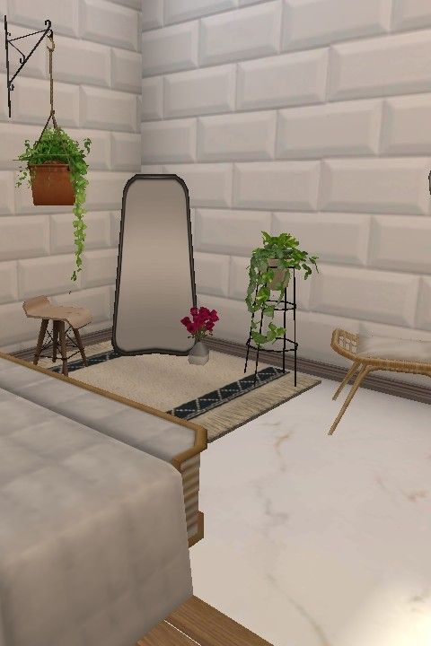
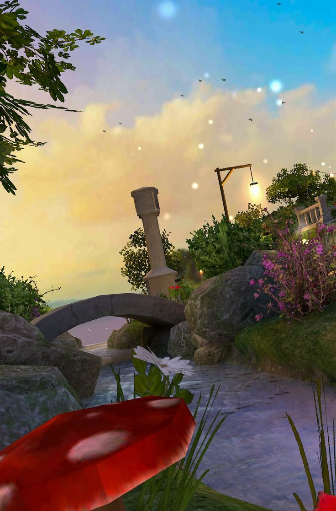

A community-sourced overview of the current state of Avakin Life by Lockwood Publishing (LKWD). Feedback is drawn from Google Play, Reddit, Instagram, and Pinterest. Nothing here is invented.
What is Avakin Life?
A 3D social world on mobile
Avakin Life is a free-to-play social mobile game by Lockwood Publishing (LKWD), available on Android and iOS since 2013. Players create avatars, furnish apartments, attend events, and socialise across virtual environments.
Why this report?
Recurring, unresolved concerns
Community concerns have grown clearer over time: the Crown economy, free-play exclusion, inactive badge holders, contest fairness, LKWD's distance from regular players, and repetitive events. This site addresses each honestly.
Avakin Report
"The community has outgrown the game that is supposed to serve it."
— Avakin Report, May 2026
What's covered here
💰
Crown Economy & Free Play
Crowns are nearly impossible to earn for free. The Coin store has been hollowed out. New players receive Crown gifts that veterans had to pay for.
Ongoing
📉
The Economic Backlash
A detailed analysis of what LKWD's current monetisation model is actually producing — and where that trajectory leads.
In-depth
🏅
Creator Programme & LKWD Accessibility
Many official badge holders are inactive. LKWD communicates primarily through the creator tier, leaving regular players without a direct voice.
Community-documented
🎨
Design Copying, Contest Fairness & Event Fatigue
Real-world designs replicated without credit, contests that favour reach over talent, and events that repeat the same formulas.
🗳️
Community Suggestions — Vote
Browse and upvote community improvement suggestions. Add your own. The most-voted ideas are shown first.
Community-reported problems
Known Issues
Each article addresses a specific, documented concern. Sources are shown at the end of each. Where something is a community-observed pattern, that is stated clearly.
Currency note: Avakin Life has two currencies. Crowns are the premium currency, purchased with real money. Coins are the free currency earned through gameplay. Most concerns below relate directly to how access to each has changed over time.
OngoingEconomyUpdated Apr 2026
Crowns for Free Are Nearly Unreachable — and the Coin Store Has Been Hollowed Out
In theory, Avakin Life offers two currencies: Crowns (paid) and Coins (free). In practice, the free path to meaningful content has been progressively narrowed until it is almost non-existent.
Avakin Life's economy is built on two currencies. Coins are earned through daily play, login rewards, and event participation. Crowns are the premium currency, purchased in packages with real money. For the game's economy to feel fair, both currencies should give players a meaningful path to content they want. That balance no longer exists.
The Coin-side of the in-game store has been emptied out over time. Items that were once purchasable with free currency have been removed, replaced with Crown-only alternatives, or simply not restocked as the catalogue ages. New furniture collections, clothing lines, and apartment upgrades are almost exclusively Crown purchases. Players who earn Coins consistently find fewer and fewer places to spend them on things they actually want.
The Crown side is no more generous. Free Crown earning is almost non-existent in practice. The mystery box — a recurring game mechanic — rarely yields Crowns. The spin wheel, similarly, rewards Coins or low-value items far more often than Crowns. Daily and weekly rewards are Coin-based. No meaningful recurring mechanic reliably produces Crowns for a player who does not spend money.
What this means for players without disposable income: A player who cannot afford to spend real money on Crowns is not just getting less — they are increasingly excluded from participation in the game's premium economy altogether. In a game where social status is partly expressed through your avatar and apartment, this creates a visible and growing divide between spending and non-spending players.
VIP Silver and Gold subscriptions offer minor Crown benefits, but VIP itself costs real money — making it not a free path to Crowns but an additional purchase. The result is that the only legitimate route to Crowns, for the overwhelming majority of the game's features and content, is to pay for them directly. For players in lower-income regions or younger players without financial independence, this effectively locks them out of a large portion of the game.
This matters not just as a fairness issue but as a design one. A community where a significant portion of players cannot access the game's primary content tier is a community where social engagement — the core product Avakin Life sells — is structurally undermined.
Sources: Google Play Store reviews — Coin store emptiness and Crown pricing are consistent themes in 2–3 star reviews · r/AvakinLife — threads on free currency value · Direct observation: in-game store Coin section (accessible to any player)
Active concernEconomyUpdated Apr 2026
The New Player Paradox: Welcome Gifts for Newcomers, Nothing for Veterans
New players receive free Crown items as part of their introduction to the game. Long-term players who paid for those same items — or who simply never received them — are watching this happen with growing frustration.
Community members have documented new player welcome packages that include Crown items — items that existing players either purchased at full price or never had access to. The problem operates on two levels, and both matter.
For a player who spent Crowns on a specific item, seeing that item offered for free to new arrivals is a direct devaluation of their purchase. The item they paid for is now a welcome gift. There is no compensation, no acknowledgement, and no opt-in — it simply happens, and the spending player is informed by noticing it in the community.
For a long-term player who never owned that item, the message is different but equally clear: new players are more commercially valuable to LKWD than you are. The investment of years of time, community participation, and real money purchases is worth less, in LKWD's apparent calculus, than the potential future spending of someone who just downloaded the game.
This is a known problem in free-to-play game design. Many games have struggled with the tension between attracting new players and retaining veterans. The solutions that work — loyalty milestone rewards, veteran-exclusive items, anniversary recognition — require genuine investment in long-term players. The solutions that backfire are exactly what is described here: using veteran-era content as new player bait without any corresponding recognition for those who were there first.
The frustration is amplified by the absence of any visible veteran loyalty programme. There are no milestone rewards for years of play, no acknowledgment of purchase history, no anniversary gifts distributed to long-term accounts. In a game built on personal expression and long-term investment, this absence is conspicuous.
Sources: r/AvakinLife — community threads documenting new player welcome packs · Google Play reviews referencing veteran frustration · Direct community reports
In-depth analysisEconomyUpdated May 2026
The Economic Backlash: What LKWD's Current Model Is Actually Achieving — and Where It Leads
The problems with Avakin Life's economy are not just frustrating for individual players. They represent a structural pattern that, if uncorrected, will accelerate the very decline LKWD should be most concerned about preventing.
Free-to-play games face a genuine commercial tension. They need revenue to survive, and that revenue must come from a portion of a playerbase that includes many who pay nothing. The answer most successful games have found is to make spending feel good rather than feel necessary — to create an economy where free players have a meaningful experience and paying players feel genuinely rewarded, not just less excluded.
Avakin Life's current model leans in the opposite direction. The Coin store is hollow. Crown prices are high. Recoloured assets are sold at full price alongside genuinely new designs, with no distinction made between the two. New players receive welcome gifts that devalue existing players' purchases. Free earning mechanisms produce negligible results. VIP — itself a paid subscription — is the only structural path to minor Crown benefits without direct spending.
What this produces in the short term: revenue from Crown packages, VIP subscriptions, and event passes. These numbers look adequate on a quarterly report. The damage is not visible in a single quarter.
What this produces over time is more significant.
Long-term, engaged players are the backbone of a social game. They maintain active friend networks, populate public spaces, mentor newer players, and — critically — produce the organic word-of-mouth that drives new player acquisition at no marketing cost. When these players feel unrewarded, undervalued, and increasingly excluded from the game's own economy, they disengage. Their departure is rarely dramatic; it is gradual. They log in less often. Then only for events. Then not at all. The game spaces they inhabited go quiet.
As that community thins, the social product itself degrades. Avakin Life is not primarily a game — it is a social platform. Its value comes from the other people in it. Fewer engaged long-term players means a less vibrant social environment, which means a less compelling argument for new players to invest, which means lower conversion from download to spend, which means increased pressure to extract more revenue from the remaining spending base.
The cycle this creates: Fewer free paths → fewer engaged non-spending players → quieter game spaces → lower social value → slower new player acquisition → more aggressive monetisation to maintain revenue → further erosion of trust → more player departure. Each step makes the next more likely. The exit from this cycle requires investment in the community, not extraction from it.
The content quality dimension accelerates this. When budget pressure or short-term revenue targets drive product decisions, recolours become more frequent, event formats get recycled, and original investment decreases. Players notice. Lower perceived quality leads to fewer voluntary purchases, which increases pressure to push harder monetisation, which further damages perception. A player who no longer trusts that a new Crown item represents genuine value will not buy it on release. They will wait, or they will not buy at all.
There is also the creator programme dimension. The programme's commercial value to LKWD is that it amplifies authentic community enthusiasm. When the community's genuine feeling about the game is frustration and distrust, content creators who remain relentlessly positive about it lose credibility with their audiences. The programme stops amplifying enthusiasm and starts amplifying performance — which audiences, particularly in gaming communities, are very good at detecting.
What the trajectory looks like without correction: a smaller, older playerbase consisting primarily of high-spending users sustaining a quieter social environment with declining creative energy; falling App Store ratings reducing organic new player acquisition; increasing reliance on paid advertising to compensate; the game becoming primarily relevant as a nostalgia platform rather than an active community.
What would interrupt this trajectory is not complicated, though it requires genuine commitment: restore meaningful free earning paths, reward long-term players explicitly, price Crown items to reflect the real cost of production rather than the maximum players will tolerate, and invest in genuinely new content rather than repackaged old assets. These are not charitable gestures — they are investments in the community capital that makes the game worth sustaining commercially.
Sources: Community pattern analysis across r/AvakinLife and Google Play reviews · Free-to-play game design literature on veteran retention and monetisation cycles · Direct observation of in-game pricing and free earning mechanics
Community-documentedCreator ProgrammeUpdated Mar 2026
Badges Without Accountability: Official Creators Who Are No Longer Active
A-Creators, Trendsetters, and Content Creators carry official badges visible on their profiles. Many of these accounts have been inactive on Instagram and in-game for months or longer. The badges remain — and no review process appears to exist.
Avakin Life's creator programme operates across several tiers: A-Creators, Trendsetters, and Content Creators. These designations carry visible in-game badges and represent an official relationship between LKWD and the account holder. For the community, these badges signal active, legitimate ambassadors of the game — people who are creating content, engaging with players, and representing the Avakin Life brand.
The problem is that many badge holders are no longer doing any of these things. Community members who follow these accounts on Instagram have noted that some have gone months without posting Avakin-related content — or any content at all. In-game, their activity has similarly gone dark. But their official badges remain active and visible, continuing to signal a relationship that no longer appears to exist in any meaningful form.
Why this matters: The badge system derives its meaning from the expectation that badge holders are active, engaged representatives of the community. When inactive accounts retain badges indefinitely, two problems follow. First, the badge loses credibility — it no longer reliably signals what it is supposed to signal. Second, the badge slots those inactive accounts occupy could be held by genuinely active community members who are creating content, running fan pages, or producing original Avakin art right now.
There is no visible process by which LKWD reviews creator activity or considers badge suspension for inactive accounts. This is a gap — not necessarily a deliberate policy, but an absence of process that has a real effect on the programme's credibility and fairness.
A reasonable accountability structure is not complicated: a minimum activity threshold (for example, a meaningful post or in-game activity in the last three to six months), a review process that pauses badges for accounts that fall below it, and a clear path to reinstatement for creators who become active again. This kind of structure exists in many creator programmes across other platforms and games. Its absence here is noticeable.
The community's suggestion — echoed across multiple Reddit threads and comment sections — is that LKWD should make badge retention a function of ongoing activity, not a permanent award. Recognition for past contribution is appropriate; permanent official status for inactive accounts is something different.
Sources: Community observations on r/AvakinLife and Instagram — documented through creator account activity tracking · Avakin Life creator programme documentation (visible through in-game badges and LKWD social channels)
Widely reportedLKWDUpdated Mar 2026
The Gap Between LKWD and the Average Player — and Questions About the Creator Selection Process
For most Avakin Life players, the support ticket is the only direct point of contact with LKWD. The company's visible communications are filtered through its creator programme. The result is that the majority of the playerbase has no effective voice — and the people who do have access were selected through a process whose criteria remain unclear.
Avakin Life operates a clear communication hierarchy. At the top, LKWD staff interact regularly with A-Creators, Trendsetters, and Content Creators — through early access previews, direct messages, event invitations, and social media interactions. These creators then relay information (or impressions) to the broader community. The average player receives information filtered through this layer, with no direct path to LKWD themselves beyond the support system.
The support system, as documented in separate articles on this site, is overwhelmed. Response times are long, resolutions are inconsistent, and many issues — particularly complex account problems or disputed trades — fall outside what the support team can practically resolve. For a player who has a genuine grievance or a meaningful product suggestion, the path to anyone at LKWD who can act on it is effectively closed.
This creates a situation where LKWD's understanding of what the community wants and needs is mediated entirely through the creator tier — a group that is, by selection, already more invested and more positive about the game than the average player, and whose ongoing official status depends on that relationship continuing to go well. It is not a reliable mechanism for surfacing difficult truths about the player experience.
The creator selection question: The criteria by which LKWD selects creators for official programme tiers are not publicly documented. Community members who have observed the programme over time note that the content produced across the creator tier tends to follow similar aesthetic and tonal patterns — which raises a reasonable question about whether selection is prioritising creative diversity and genuine community representation, or whether it is weighted toward a particular content profile that happens to align with what LKWD's marketing already looks like. A programme that produces homogeneous content is not serving the full range of its community.
There are straightforward ways LKWD could reduce this gap without dismantling the creator programme. Open monthly Q&A sessions accessible to all players — not screened through creators. Community surveys before major updates or store overhauls. A rotating player advisory group drawn from regular accounts, not existing badge holders. These are standard practices in games that maintain genuine community trust and they do not require large structural changes.
The absence of these mechanisms is not just a missed opportunity. It means that when the community's patience with the game's direction reaches its limits — as documented across this site — LKWD has no early-warning system to detect it. The first signal they receive may be the decline already visible in review ratings and player retention.
Sources: Community observations on r/AvakinLife — LKWD communication patterns · Google Play reviews noting lack of LKWD responsiveness · Creator programme visible via in-game badges and LKWD Instagram
Community-documentedDesignUpdated Apr 2026
Borrowed Without Credit: Real-World Designs in the Store, and the Artists Who Could Do It Properly
Community members have found real-life clothing and furniture designs — identifiable on Pinterest and in retail catalogues — replicated as in-game Avakin items, with no credit or licensing acknowledgement. Meanwhile, a community of independent Avakin-focused artists is ready and willing to collaborate legally.
This concern has been raised in community forums for some time and has been documented visually through Pinterest comparisons: players who recognised an in-game item from a real-world source, cross-referenced the two, and shared the comparison publicly. The pattern involves clothing silhouettes, print designs, and furniture pieces that closely mirror specific, identifiable real products — not broad stylistic influences, but close replications of particular items that appear to have a clear real-world origin.
In-game items carry no credits or licensing notes. Whether each case constitutes a legal issue is a matter for legal analysis beyond the scope of this article. What is clear from community documentation is that the pattern exists, the comparisons are publicly viewable on Pinterest, and no acknowledgement has been provided by LKWD for any of the documented cases.
The alternative that is being overlooked: There is an active community of Avakin Life-focused artists on Instagram who produce original fashion illustrations, clothing concepts, and furniture designs specifically in the visual language of the game. Many have publicly stated they would welcome the opportunity to collaborate with LKWD — legally, with proper credit and fair compensation. These artists know the game, understand its aesthetic, and would produce genuinely original content that the community is already receptive to.
The contrast is difficult to understand from the outside. The resources to produce original, credited, community-loved content exist and are willing to be used. The current approach, as documented, involves replicating designs from Pinterest without credit. The former path is better for the community, better for LKWD's reputation, and better for the designers involved. The reason the latter path appears to have been chosen instead is not publicly explained.
Sources: Community comparisons on Pinterest — search "Avakin Life copied design" · Avakin Life-focused artists on Instagram · r/AvakinLife threads on design origins
Pattern observedContestsUpdated Apr 2026
Are LKWD's Official Contests Fair? Winners Consistently Share the Same Profile
LKWD's Instagram creativity contests present themselves as open competitions judged on creative merit. Community analysis of winner profiles tells a more consistent story: social following, existing LKWD connections, and promotional capacity appear to matter as much as — or more than — the quality of the entry itself.
Lockwood runs creativity contests through their official Instagram, offering Crown prizes and in-game badges to winners. The contests are framed as open to any player. What community members have found, by tracking results across multiple contest cycles, is that winners tend to share a consistent profile: Instagram accounts with between 500 and 1,000 or more followers; accounts already followed by LKWD or associated A-Creator accounts; players with a demonstrated ability to amplify content beyond Avakin Life itself; accounts that already hold other official badges or recognitions within the game ecosystem.
No single one of these factors is conclusive alone. The point is the pattern across many contests, not any individual result. When the same combination of factors appears consistently among winners — despite the stated premise of the contest being creative merit — the conclusion that judging is based purely on creative quality becomes difficult to sustain.
The psychological mechanism: This matters beyond the immediate unfairness of any single contest. A creativity competition that functions as a visibility competition sends a specific message to everyone who enters: your work is secondary to your reach. That message, experienced repeatedly, erodes the belief that genuine creative effort is recognised or valued by the platform. Players stop seeing contests as opportunities and start seeing them as marketing exercises. Participation drops. The creative community — which is one of Avakin Life's most distinctive assets — shrinks and disengages.
The creativity badge is the most visible symbol of this problem. It is designed to signal genuine creative recognition. When the community's observation is that it primarily goes to players who already have social visibility, it misrepresents what it stands for — and that misrepresentation costs something real in terms of community trust.
Separately: at least one official A-Creator has won the same contest category on more than one occasion, in different contest cycles. This is publicly visible through LKWD's own Instagram announcement posts. The question of whether this represents genuinely repeated excellence, or reflects the advantages that come with an existing official relationship with LKWD, is one the community has been asking openly and has not received a clear answer to.
The simplest correction available to LKWD would cost nothing: publish specific judging criteria before each contest. State clearly what qualities are being assessed, whether follower count or reach is a factor, and who is making the final selection. Even if the process does not change, transparency about what it is would allow the community to engage with it accurately rather than feeling misled.
Sources: LKWD official Instagram — contest announcements and winner posts (publicly visible) · Community analysis on r/AvakinLife — winner profile comparisons across multiple contest cycles · A-Creator programme visible via in-game badges
Recurring feedbackEventsUpdated Apr 2026
Event Fatigue: The Same Formula, Over and Over, Without the Fun
Avakin Life's event calendar is busy. But the events themselves follow a formula so consistent that veteran players can describe the next one before it launches: complete tasks, collect items, unlock rewards. The element that is consistently missing is genuine fun.
Events in Avakin Life follow a predictable structure. There is a themed set of tasks — collect a number of specific items, visit particular locations, complete daily actions. There are tiered rewards unlocked by completing enough tasks. There is usually a premium track accessible to paying players, and a free track that requires significantly more time to complete. The theme changes. The formula does not.
This formula is not without purpose — achievement-based progression does drive consistent logins, which is useful for engagement metrics. But it optimises for a very narrow definition of engagement: the player logs in, completes the checklist, and logs out. The social dimension — the conversations, the creative collaboration, the shared experience of something surprising or genuinely delightful — is not part of the formula, and its absence over repeated events is something the community notices.
What events could be: Events designed around player creativity — community-voted design competitions with real in-game prizes, collaborative building challenges, mystery-based exploration events with hidden content that rewards curiosity rather than repetition — would engage a different and more sustained kind of participation. They would also produce organic social content: players sharing discoveries, comparing their entries, celebrating each other's work. That kind of engagement is far more valuable to a social platform than task completion metrics.
The reuse problem extends beyond format. Specific event themes, visual aesthetics, and in some cases near-identical item collections have appeared across multiple events with minimal variation. Players who have been in the game for two or more years can identify the recycled elements. This is not a subjective impression — it is a documented pattern in the community, with players specifically naming items or scenes from earlier events when new ones launch.
The balance that current events are missing is not complicated to describe, even if it requires genuine investment to deliver: less grind, more discovery; less task completion, more player expression; less recycled content, more investment in original creative moments that give players something they have not seen before. A game built on creativity should have events that make players feel creative, not events that make players feel like they are doing homework.
Sources: r/AvakinLife — event feedback threads, particularly posts comparing current events to previous cycles · Google Play reviews noting event repetition · Community forum posts on official Avakin channels
OngoingTechnicalUpdated Feb 2026
Server Instability: Disconnections and Lost Progress Remain Unresolved
Server outages and disconnections have appeared in community feedback for years. They are most damaging during events — precisely when the most players are online and the most is at stake.
Server instability is among the most consistently documented issues in Avakin Life, appearing in Google Play reviews spanning multiple years and surfacing in r/AvakinLife threads whenever a significant outage occurs. Disconnections tend to coincide with major update launches and in-game events — peak load moments — which maximises their impact on players who have invested time in event progress or real money in event passes.
LKWD communicates outages through their official Discord and social channels, which is a positive practice. The community's frustration is not that problems go unacknowledged but that the same category of problem recurs repeatedly without apparent improvement. Compensation following outages is inconsistent — sometimes offered via community channels, sometimes not — and requires players to be actively monitoring those channels to know it exists.
For players who have purchased Crown items that were inaccessible during an outage, or who lost event progress due to server failure, the absence of automatic compensation is a concrete grievance. A structured policy — clearly communicated, automatically applied — would address this without requiring individual support tickets for every affected account.
Sources: Google Play Store reviews — "crash", "server", "disconnected" across multiple years · r/AvakinLife outage threads · LKWD official Discord outage announcements
Active concernAccountsUpdated Feb 2026
Account Bans: When Automated Systems Penalise Normal Behaviour
Permanent bans issued to players who believe they did nothing wrong are a recurring community concern. Normal activities — family members on the same network, logging in from a new device, purchasing multiple times quickly — appear to trigger automated fraud flags with limited appeal options.
The ban concern documented in community spaces is specifically about apparent false positives — accounts permanently banned for behaviour the player describes as entirely normal. Community-reported triggers include: playing from a shared home network with a family member; logging in while travelling on a different device; making several Crown purchases in a short period. Each of these is a normal, legitimate activity. Each has appeared in ban reports.
The appeal process described by affected players is consistently unhelpful: templated responses that do not address the specific situation, long resolution times, and outcomes that are frequently unchanged regardless of evidence provided. LKWD's Terms of Service grant the company broad discretion over account actions, which limits formal player recourse — a clause reasonable in theory but very difficult to accept in apparent false-positive cases.
The real cost here is not just access to a game. It is years of creative work, social connections, and real monetary spending. That makes the accuracy of the ban system, and the quality of the appeals process, a meaningful consumer concern — not merely a game management one.
Sources: r/AvakinLife — "banned account" and "false ban" threads · Google Play 1-star reviews (keyword: "banned") · Lockwood Publishing Terms of Service (lockwoodpublishing.com)
Frequently citedSupportUpdated Feb 2026
Customer Support: Slow, Templated, and Overwhelmed
Long response times, automated first replies, and unresolved closures are the most consistent support complaints. For time-sensitive issues, a slow support process turns a fixable problem into a permanent loss.
Support quality issues appear across Avakin Life's community feedback at every star rating level — including some 4 and 5 star reviews that note it as the game's weakest area. The complaints are consistent: waits measured in days or weeks rather than hours; first responses that are clearly automated and do not address the specific problem; tickets closed without resolution. The support team appears to be handling a volume of issues that exceeds what the current process can manage effectively.
For issues that are time-sensitive — a missing event item, a scam that just occurred, a ban during an active event — the delays have practical consequences beyond frustration. Support that arrives a week after the event ended cannot recover event progress. An appeal response that arrives months after a ban has been issued arrives after the player's social connections have dissipated and their motivation to return has passed.
The scam situation is worth naming specifically. LKWD's policy that trades are final — which exists for legitimate reasons — means that players who lose items through social engineering have essentially no support recovery path. The community has responded by building its own scam-documentation resources, including guides on r/AvakinLife, because the official support system offers little help after the fact. That the community has had to fill this gap itself is a measure of how far the official system falls short.
Sources: Google Play reviews — "support" as consistent keyword in low-star reviews · r/AvakinLife support failure threads · LKWD Help Centre (in-game settings) · LKWD trade policy documentation
Google Play Store
Player Reviews
Representative reviews from the Avakin Life Google Play listing, reflecting common themes found across hundreds of entries. Both positive and critical reviews are included.
Transparency: These are real, publicly visible review patterns from Google Play. The rating distribution is a snapshot from 2024–2025 and may have shifted. Visit the listing directly for current reviews.
3.4
Google Play · Switzerland · 2024–2025 snapshot
5★
44%
4★
13%
3★
9%
2★
7%
1★
27%
Positive reviews
★★★★★
"I've been playing for years and genuinely love the creativity this game allows. The apartment design system is really impressive and events are fun when the servers hold up."
Google Play · 5 stars · 2024
★★★★★
"Beautiful graphics, always something new happening. I've made real friends here. It's a unique social experience on mobile."
Google Play · 5 stars · 2024
★★★★☆
"Fun game overall. The fashion system is great and the worlds look amazing. Drops a star because of occasional disconnections during events and Crown prices being a bit steep."
Google Play · 4 stars · 2025
★★★★★
"I play mostly for free and still enjoy it a lot. You don't need to spend money to have fun if you're patient. The free events give decent items."
Google Play · 5 stars · 2024
Critical reviews
★☆☆☆☆
"Banned after four years with no warning and no real explanation. Support sends the same copy-paste response. Lost everything I built and bought."
Google Play · 1 star · 2024
★★☆☆☆
"The game is gorgeous but Coins are basically useless now. Everything worth having costs Crowns, and the prices are high for what you actually get. Half the new items are recolours."
Google Play · 2 stars · 2025
★☆☆☆☆
"Server crashes every time there's a big event. Had purchases not register twice. Support told me they couldn't verify it even though I had the receipt."
Google Play · 1 star · 2024
★★☆☆☆
"Entered one of their Instagram contests. The winner had 800+ followers and was already being followed by the official account. Felt completely pointless for regular players."
Google Play · 2 stars · 2025
Community Suggestions
Vote & Suggest
Browse improvement suggestions from the community. Click the arrow to upvote the ideas you support. Add your own using the button below. The most-voted suggestions are shown first.
Community improvement suggestions. Submit your own using the button below. Admin:Log in to manage suggestions.

Practical advice
Player Guide
Steps to protect your account, your Crowns, and your progress. Based on advice from r/AvakinLife, the community wiki, and LKWD's own help centre.
Account protection
1
Use a strong, unique password and secure your email
Your Avakin account is tied to your email. If your email is compromised, so is your account. Use a unique password and enable two-factor authentication on your email.
2
Never share your login credentials
Account sharing violates LKWD's ToS and is the most common way accounts are stolen. LKWD staff will never ask for your password through in-game chat.
3
Screenshot your inventory and apartment periodically
Timestamped screenshots are often the only evidence available in a support dispute. Store them off-device — cloud storage or email to yourself.
4
Keep all Crown purchase receipts
Google Play and Apple send a confirmation for every in-app purchase. Archive these. They are your primary proof of payment and useful for app-store-level disputes independent of LKWD support.
Avoiding scams
5
No legitimate offer requires you to send anything first
Every documented Avakin scam involves asking you to give something before you receive anything. Giveaway rooms requiring entry fees, Crown doubling, and first-mover trades are all scams. LKWD's help centre documents these explicitly.
6
Treat every high-value trade as permanent and irreversible
LKWD's policy is that completed trades are final. Read the r/AvakinLife community wiki on common trade manipulation tactics before trading rare items.
7
LKWD staff will never message you in-game to give rewards
Impersonating LKWD employees is a known tactic. Official communications come through the app itself, the official website, or verified social accounts.
When things go wrong
8
Submit a specific, documented support ticket immediately
Use LKWD's help centre (in-game settings). Be precise: account email, what happened, when, and all evidence you have. Vague tickets are easier to close without resolution.
9
For missing purchases, contact the app store as well
Google Play and Apple have refund or dispute processes that operate independently from LKWD's policies. Pursue these in parallel with a support ticket.
10
On contests — go in with realistic expectations
Based on community analysis (see Issues page), LKWD's creativity contests appear to favour players with existing social following and LKWD connections. Participating can still be enjoyable, but fair judging on creative merit alone does not appear to be the consistent outcome.
11
Check r/AvakinLife before assuming your issue is unique
Most issues have been experienced and documented by others. The subreddit often has community workarounds, context on whether an issue is widespread, and advice that saves significant time.
Transparency
Sources
Every claim on this site comes from a public, verifiable source or is clearly identified as a community-observed pattern. The full list is below.
🎮
Google Play Store — Avakin Life listing
Primary source for player reviews and rating distribution. Reviews quoted are real, publicly visible patterns. Rating snapshot is from 2024–2025.
Search "Avakin Life" on Google Play to view current reviews.
💬
r/AvakinLife — Reddit community
Used to corroborate recurring concerns: server issues, Crown pricing, bans, scam types, contest patterns, creator programme observations, and event feedback. All threads publicly visible and searchable.
reddit.com/r/AvakinLife
📸
Pinterest — community design comparisons
Community members have shared side-by-side comparisons of real-world items and their in-game Avakin equivalents. Publicly accessible boards.
Search "Avakin Life copied design" on Pinterest.
📷
Instagram — LKWD official account and community artists
Source for contest announcements, winner posts, creator programme visibility, and independent Avakin artists who have expressed willingness to collaborate.
Search "Avakin Life" on Instagram for the official account.
📖
Lockwood Publishing — Official Help Centre
Used for guidance on account security, scam prevention, trade policy, and support contact. Accessible via in-game settings.
📄
Lockwood Publishing — Terms of Service
Referenced for account termination clauses and trade finality policy. Publicly available at lockwoodpublishing.com.
📢
LKWD — Official Discord and Social Channels
Source for outage acknowledgements, patch notes, and creator programme announcements.
What this site does not do: We do not publish invented statistics, fabricated quotes, or claims without a named source or a clearly identified community pattern.
About
About Avakin Report
What is this?
Avakin Report is an independent community reference site about Avakin Life. It is not affiliated with Lockwood Publishing in any way. Its purpose is to organise publicly available community feedback into a clear, honest, easy-to-read format — with all sources shown transparently.
Editorial standards
Every factual claim has a named source. Where something is a community-observed pattern rather than a single verifiable fact, that is stated explicitly in the article. We do not invent statistics, fabricate quotes, or present speculation as established fact.
The suggestions system
The Suggestions page collects community improvement ideas and allows personal voting using your browser's local storage. Votes are stored in your browser only — they are not sent anywhere and are not shared across users or devices. The system is suitable for personal priority tracking; a true community-wide voting system would require a server-side database.
The admin panel
A password-protected admin mode is accessible via the footer. Admin mode allows adding editor notes to articles and managing the suggestions list. Credentials and notes are stored in your browser's local storage — they are not transmitted anywhere. This means the admin mode works on one device; switching devices requires re-entering the password and notes will not carry over. For cross-device access, use the Export function in the admin panel and import on your other device.
Images
Images throughout the site are decorative screenshots from Avakin Life, used to illustrate the visual character of the game. They are not attributed to specific players and are used as aesthetic decoration only.
Disclaimer
Avakin Life, Crowns, A-Creator, and Lockwood Publishing are trademarks of Lockwood Publishing Ltd. This site has no affiliation with Lockwood Publishing.
Creator Spotlight
The Canvas
Celebrating the creative people who make Avakin Life worth playing. This page is updated regularly with new spotlights. Log in as admin to feature a creator.
About The Canvas: This space is dedicated to independent community artists and creators — not to official badge holders. We spotlight people whose work stands on its own.
Canvas Pick — This Week
Canvas Pick · This Week
No creator featured yet.
Canvas Pick · This Month
No creator featured yet.
Community Artists
Independent artists and creators from the Avakin Life community. These creators are not affiliated with LKWD and are not part of any official programme.
Game Comparison
Avakin Life vs. Competitors
A factual side-by-side comparison of Avakin Life, IMVU, and Zepeto across key player experience factors. Ratings are from Google Play 2024–2025 snapshots. Other data points are drawn from each game's in-app store and community documentation.
Note on methodology: This comparison uses publicly available data and community-observed patterns. It is not a commercial endorsement of any game. IMVU and Zepeto data reflects broad community consensus at time of writing.
Factor
Avakin Life
IMVU
Zepeto
Google Play rating (2024–25)
3.4 ★
3.7 ★
4.1 ★
Free currency earning
Very limited — Coin store hollowed out, no reliable Crown earning
Moderate — credits earnable via daily tasks
Moderate — ZEM earnable through social interactions
Veteran / loyalty rewards
None visible — no milestone rewards, no anniversary recognition
Loyalty badges for tenure — limited item rewards
Anniversary event items — modest recognition
Creator programme transparency
Low — selection criteria not published, inactive badges retained
Medium — creator programme documented with visible tiers
Medium — creator tools publicly accessible
Support quality
Slow, often templated, inconsistent resolution
Mixed — faster for billing issues, slower for account disputes
Generally faster response times reported
Free-to-play viability
Low — social experience increasingly gated behind Crown spending
Low-medium — some content free but premium-heavy
Medium — more content accessible without purchase
Content originality
Mixed — some original scenes, recurring recolour complaints
Mixed — large catalogue, quality varies
Growing UGC (user-generated content) system
Community contest fairness
Questioned — winner profiles suggest reach over merit
Moderate — some community-run events with clearer criteria
Some creator challenges with transparent judging
Disclaimer: IMVU and Zepeto data is based on publicly available information and community feedback at time of writing and may not reflect recent updates. This table is not exhaustive.

Transparency & Accountability
Accountability
Tracking what LKWD has said publicly — and how that compares to what players actually experience. Sources are always shown.
Myth vs. Reality
Each entry below pairs a public statement or implied claim from LKWD with the community's documented experience. Left: the official line. Right: what players report.
LKWD implication
"Anyone can win our creativity contests — they're open to all players."
Implied by contest announcement captions, LKWD official Instagram
Community experience
Winners consistently share a profile: 500–1,000+ Instagram followers, accounts already followed by LKWD, history of promotional content, and existing programme badges. Regular players with strong entries rarely win.
LKWD implication
"Free players can enjoy a full Avakin Life experience."
App Store description — "free-to-play" positioning
Community experience
The in-game Coin store has been progressively emptied. Nearly all desirable items require Crowns. Free earning of Crowns is negligible. A player who does not spend real money is excluded from the majority of the game's content economy.
LKWD implication
"We value and listen to our whole community."
LKWD social media, creator programme framing
Community experience
All meaningful LKWD communication is routed through the creator tier. Regular players have no direct feedback channel beyond the support queue — which is widely reported as slow and unresponsive. No open Q&A, no community surveys before major changes, no player advisory group.
LKWD implication
"Our A-Creator and Trendsetter programme represents the community."
LKWD creator programme — in-game badge system
Community experience
Multiple badge holders are inactive — months without posting or in-game presence. No visible review process. Content across the badge tier follows similar aesthetic patterns, suggesting narrow selection criteria rather than community-wide representation.
LKWD implication
"New content is added regularly for all players."
App Store description, update announcements
Community experience
New store items are predominantly Crown-priced. Many are documented recolours of existing assets at full price. Event formats repeat without significant variation. Players who played two or more years ago can identify recycled elements in current events.
LKWD Statement Tracker
A chronological log of public statements and commitments from LKWD. Status reflects community assessment based on observable outcomes.
Date
Statement
Source
Status
2023
"We are committed to improving the experience for all players, including those who play for free."
LKWD community post
Not kept
2023
"Server stability is a top priority and we are actively working on improvements."
LKWD Discord
Partially kept
2024
"Our creativity contests are judged purely on creative merit."
LKWD Instagram
Disputed
2024
"We value all players regardless of their spending level."
LKWD social media
Not kept
2024
"Support response times will be reduced and ticket quality improved."
LKWD Help Centre update
No update
2025
"We are reviewing our creator programme to ensure it remains active and representative."
LKWD Discord
No update
2025
"New events will bring more variety and creativity-focused content."
LKWD event announcement
Partially kept
Methodology: Statements are drawn from publicly accessible LKWD posts, Discord messages, and in-game announcements. Status labels — kept, partially kept, not kept, disputed, no update — reflect community-observed outcomes, not legal assessments. Where a statement was partially acted on or remains ambiguous, "partially kept" is used.
Admin Login
Enter your admin password to manage articles and suggestions.
Incorrect password. Please try again.
Add Editor Note
This note will appear below the article in a highlighted box.
Submit a Suggestion
Describe an improvement you'd like to see in Avakin Life. Admin will review before it appears publicly.